Dibujos en los billetes y monedas japonesas actuales
Hace poco me preguntaron si conocía los personajes que salían en los billetes japoneses y pues, como no tenía la mas remota idea de quiénes eran, decidi hacer este artículo jeje. Agregaré tambien las descripciones para los dibujos que aparecen en el reverso tanto de los billetes como de las monedas japonesas.
Billete de 10,000 yenes


Via wikipedia
En el frente, este billete tiene el retrato de Yukichi Fukuzawa. En el reverso tiene la estatua del Fenix que se encuentra en el Templo Byodoin
¿Quién era Yukichi Fukuzawa?

Apodado el Voltaire japonés, Fukuzawa Yukichi era un escritor japonés, profesor, traductor, emprendedor y periodista, fundador de la Universidad de Keio, el periódico Jiji Shinpo y del Instituto para el Estudio de Enfermedades Infecciosas.
Por sus ideales y activismo en el cambio a la Era Meiji, es considerado como uno de los fundadores del Japón moderno.
Templo Byodo in

Foto via wikipedia
El templo Byōdō-in fue construido originalmente en 998 como un chalet rural de Fujiwara no Michinagan (un importante político que ostento la época de mayor poder del clan fujiwara en el control de Japón), en el año de 1052 fue convertido por un sucesor de esta familia en un templo budista, costruyendose el salón del fenix un año despues. Fue la unica estructura que sobrevivio a un incedio producto de la guerra civil de 1336, es considerado como patrimonio de la humanidad por parte de la UNESCO al ser una de los monumentos de la antigua Kyoto.
Billete de 5,000 yenes


Imagen vía wikipedia
En el frente, este billete tiene el retrato de Ichiyo Higuchi. En el reverso tiene la pintura “kakitsubata-zu”, trabajo de Korin Ogata
¿Quién era Ichiyo Higuchi?

Ichiyo Higuchi era una importante escritora en el período Meiji y la primera escritora mujer más prominentes del Japón moderno.
Escribió poco ya que murió a corta edad pero su literatura perdura todavía es bastante apreciada en Japón hoy en día.
kakitsubata-zu


Vía wikipedia
Es una de las pinturas más famosas de Japón. Fue designada como un Tesoro Nacional y actualmente se encuentra en el Museo Nezu en Tokyo. Fue pintada en un par de 6 paneles sobre papel dorado, donde Korin uso nada mas 3 colores, el azul de los pétalos, el verde de los tallos, y el fondo de oro.
Vía artscape Japan
Billete de 2,000 yenes


Vía wikipedia
En el frente, este billete tiene el diseño de la entrada Shurei Mon. En el reverso tiene una escena de La Historia de Genji y un retrato de su autor, Murasaki Shikibu
Shureimon

Via wp
Shureimon (守礼 門 O Shurei no mon) es una puerta del barrio Shuri en Naha, la capital de la prefectura de Okinawa, Japón. Es la segunda de las puertas principales del Castillo Shuri. Fue construido en el siglo 16. También se le llamó Shurimon (首 里 門 ", Shuri puerta") y Ii no Ayajoo o Wii nu Aijoo (上 の 綾 門 "Hermosa puerta en la parte superior").
La puerta fue destruida durante la Segunda Guerra Mundial y reconstruida a través de campañas locales y el apoyo en los años 1950 y 1960. Se convirtió en la primera parte del Castillo de Shuri a ser reconstruida, mientras que décadas seguirían hasta que se restableció el resto del castillo.
La historia de Genji

Via wp
La historia de Genji (Genji monogatari 源氏物語) Es una obra clásica de la literatura japonesa escrita por la mujer de la nobleza y dama Murasaki Shikibu en los primeros años del siglo 11, alrededor del pico del período Heian. A veces se llama la primera novela del mundo, la primera novela moderna, la primera novela psicológica o la primera novela que aún no se ha considerado un clásico. Cabe destacar que la novela también ilustra una representación única de los medios de vida de altos cortesanos durante el período Heian.
Billete de 1,000 yenes


Vía wp
En el frente, este billete tiene el retrato de Hideyo Noguchi. En el reverso tiene al Monte Fuji y flores de cerezo (Sakura)
¿Quién era Hideyo Noguchi?
 Hideyo Noguchi fue un importante bacteriologo que descubrió el agente patógeno de la neurosífilis. Fue nominado en varias ocasiones para el premio nobel, fue un profesional comprometido con su labor como médico para ayudar a otros viajando hacia el final de su vida extensamente por Centro y Suramérica en la búsqueda de una vacuna para la fiebre amarilla.
Hideyo Noguchi fue un importante bacteriologo que descubrió el agente patógeno de la neurosífilis. Fue nominado en varias ocasiones para el premio nobel, fue un profesional comprometido con su labor como médico para ayudar a otros viajando hacia el final de su vida extensamente por Centro y Suramérica en la búsqueda de una vacuna para la fiebre amarilla.
Monte Fuji

Foto vía wp
Monte Fuji (Fujisan 富士山), situado en la isla de Honshu, es la montaña más alta de Japón en 3,776.24 m (12.389 pies). Es un conocido símbolo de Japón y se representa con frecuencia en el arte y fotografías, así como la visita de turistas y escaladores. Es una de las "tres montañas sagradas" (三 霊 山 Sanreizan) de Japón junto con el Monte Tate y el Monte Haku; se añadió a la Lista del Patrimonio Mundial como sitio cultural el 22 de junio de 2013.
La montaña ha sido seleccionado como patrimonio "cultural" en lugar de un sitio de patrimonio "natural". Según la UNESCO, el Monte Fuji "ha inspirado a artistas y poetas y sido objeto de peregrinación desde hace siglos".
Moneda de 500 yenes
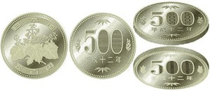
Imagen vía Banco de Japón
En el frente de la moneda aparece un dibujo de la planta Paulownia. En la parte de atrás aparece el número 500 y unas pequeñas ramas del mismo árbol supongo.
Paulownia

Via wp
Paulownia es conocida en japonés como kiri (桐), refiriéndose específicamente a P. tomentosa; también se le conoce como el "árbol princesa". Antiguamente era habitual plantar un árbol de Paulownia cuando nacía una niña, y luego convertirlo en un aparador como regalo de bodas para cuando se casara. Paulownia es el emblema de la oficina del primer ministro y también sirve como el emblema del gabinete y el gobierno.
Moneda de 100 yenes
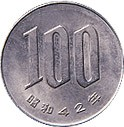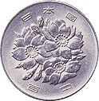
Vía Banco de Japón
Esta moneda tiene en el frente el dibujo de las flores de cerezo (Sakura). En su parte de atrás aparece el número 100 nada mas.
“Las sakura son un elemento simbólico común en la cultura popular de Japón, donde tienen múltiples significados relacionados. La imagen de los pétalos de estas flores caídos en masa al principio de la primavera, especialmente en abril, simboliza la belleza de la naturaleza y el renacimiento de la vida como un nuevo comienzo.”
Via wiki sakura
Moneda de 50 yenes
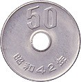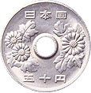
Vía Banco de Japón
Esta moneda tiene dibujado un Crisantemo en el frente y en la parte de atrás aparece el número 50. Esta moneda tiene un agujero en el centro.


Via wiki crisantemo
El crisantemo son flores nativas de Asia y el noreste de Europa. La flor pudo haber sido traída a Japón en el siglo VIII de nuestra era. El emperador adoptó la flor como su sello oficial. El "Festival de la felicidad" en Japón celebra la flor.
Moneda de 10 yenes
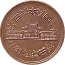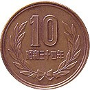
Vía Banco de Japón
Esta moneda tiene en el frente el Templo Byodo in. En la parte de atrás aparece el número 10.
El dibujo hace referencia al representa el Fénix que se encuentra en el templo Byodo in. También aparece una imagen referente a esta estructura en el billete de 10.000 yenes, del cual les hable al comienzo de este articulo.
Moneda de 5 yenes
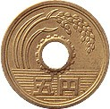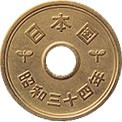
Vía Banco de Japón
Esta moneda tiene en el frente dibujados una espiga de arroz, un engranaje y agua. En la parte de atras tiene unos kanji haciendo referencia a Japón y al año en que fue expedida la moneda.
Los tres elementos gráficos de la moneda representa la agricultura y la pesca, los elementos clave del primer sector de la economía japonesa. Alrededor de su agujero, hay un engranaje que representa la industria. Es la única moneda japonesa en circulación a carecer de números arábigos en cada cara.
Moneda de 1 yen
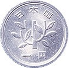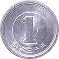
Vía Banco de Japón
Esta moneda tiene dibujados en el reverso un árbol joven, que simboliza el crecimiento sano de Japón y en el frente el número 1.
Eso es todo detrás de las fascinantes historias y significados de los dibujos en los billetes y monedas japonesas, espero esta información haya sido interesante y enriquecedora para ustedes. Nos escribimos en una próxima ocasión.
Fuente principal: Banco de Japón
Este artículo fue elaborado con la colaboración de Carlos Insignares. Imagen principal de Christian Molina
Artículos Relacionados

Tips para preparar tu maleta antes de viajar a Japón

20 cosas sorprendentes que pasan en Japón Parte 2